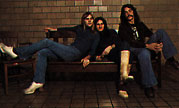

"No, no," she explains, "Robert Plant sounds like the first voice, Geddy Lee is so much smoother and more subdued." There's no denying a fan's word, but Circus Magazine caught up with the vocal chords in question in Spokane, Washington, to settle once and for all whether Rush wasn't just another "junior Led Zeppelin." And learn a little more about the growing success of All the World's a Stage (Mercury), the live double-record set of this Northern power outfit, Rush -- Geddy Lee, Alex Lifeson and drummer Neil Peart.
"I don't acknowledge the resemblance the way most people do," said Geddy Lee, as he stretches out in an all too familiar hotel room. All The World's A Stage is not just a catchy title for Rush's most recent record, but a fact of life for the hardworking band who have relentlessly crisscrossed their native Canada and the States.
"Superficially, we are similar... yes," allowed the urbane bassist. "I have a very high voice, so does Robert Plant, but it's an entirely different voice. Both bands play at a pretty high volume, but the music is different. And when you look inside at what motivates the music, you see it's very different."
Geddy expounds on the Canadian identity which has produced a synthesis of musical genres -- the rock and roll hybrid that is Rush. Living in Canada, he explains, a rock musician will share many cultural reference points with his American counterparts. Thematic concerns like "driving around in your car" and high school proms are naturally foreign to Europeans. Rush enjoyed the best of both worlds.
 "In Canada, you're influenced by American things, but you also absorb a great deal of the Commonwealth country's British background," Geddy continues.
Yet theirs is a debt common to all "Third Generation" rockers. Whereas bands such as the Stones and Led Zeppelin could transform rhythm and blues into a powerful new musical mode, the bands of the 70's must incorporate the rock heritage of their predecessors. And like their contemporaries Kiss and Aerosmith, Rush reveals utmost respect for their rock and roll roots, regardless of national origin.
"Our influences are still around -- that makes it a bit tougher We're still a young band... with us, we're still competing with some of our very influences."
It's easier to categorize new music in simple terms of what is already familiar. Yet Rush is quite capable of functioning in the face of such comparison. The band spent five grueling years playing in tiny provincial bars where patrons had no interest in a sneak preview of stardom." Mostly, they wanted a living jukebox.
"The worst was Northern Ontario," Geddy recalled, "They don't care what you do. They don't care if you do the greatest original material in the world if their ears haven't heard it before. They just want to get drunk and hear their favorite tunes."
When so many weaker characters would simply hang up their Flying V's, how did Rush survive the endless thankless 5 set nights that would barely pay for the equipment van's gasoline?
"It was just persistence," said Geddy, "We only did tunes that we liked, and we'd sneak in an original here and there. Eventually, we built up our own little following."
The determination and rugged individualism that developed so early in the band's career were essential when Rush finally took the leap into the recording studio. Their initial offering was rejected by record companies. Undaunted, they formed their own record label and released their first LP independently.
"We just kept ourselves going," Geddy remembered, "My family didn't understand what I was doing... until I started making money!"
But the long climb to the top was not without casualties. One who fell by the wayside was the band's original drummer, John Rutsey.
"Just before we were planning our first American tour," explained Geddy, "just before things really started happening, it was obvious that his heart wasn't into it. So we thought we'd better get it out in the open before things really started coming at us fast. He just wasn't thinking the way Alex and I were and he decided it would be better for himself and for us if he left. And it turned out for the best." Because, it was love at first sight for drummer Neil Peart and the surviving 2/3 of Rush.
"We had pretty definite ideas as to what we wanted," Geddy recalls, "and as soon as Neil came in and sat behind his kit, we just knew he was right. He was just doing things we'd always wanted to hear behind our music. And right from the beginning, he was very excited and took a very dominant role."
The debonair drummer also assumed responsibility for the band's lyrics, an unusual contribution for the average tub-thumper.
"Neil is our man of words," says Geddy, "but he also dismissed the notion that the remaining members of Rush are just strong silent types.
"The things I write about are real close to my heart," he admitted, "and I can only write if I'm personally motivated by something, whereas Neil is very literate and can just pull things out of the air." Neil's fertile imagination was invaluable in the creation of 2112, Rush's fourth, and concept album (Mercury), that was a daring project for the young band.
The pressures of touring can also cause the wells of inspiration to run dry, sometimes forcing a band to put out a live album for lack of new material. That, however, was not the case with All The World's A Stage.
"We always wanted to do a live album as a sort of historical thing," Geddy pointed out. "In fact, we wanted to do it as our fourth album, but we thought it might be too early so we did 2112 instead."
One criticism leveled at All the World's a Stage is the feet that its packaging, imitative of Kiss' incredibly successful Kiss Alive format, features what almost amounts to an advertisement for Rush's earlier LPs.
"We didn't want it to look like that!" sighed Geddy, "It wasn't supposed to look like a commercial. The record company did that. I guess from a business point of view it made sense but our original intention was to furnish a historical package, a discography. We wanted people to be able to tell where the songs came from."
"The next album," Geddy reveals, "will be recorded in England. It will be a natural progression, though not a major concept like 2112. We've always looked up to the English progressive bands and it's gonna be a good opportunity to go over there and try to capture the same sort of atmosphere. We're also expanding what we can play," he added "We're getting into more instruments, there will be more texture. We would never foresake our hard rock framework, though! We'll just update it," the bassist states emphatically. "A lot of bands underestimate their audience. But if you look at the very big bands with longevity, they've grown and progressed and their audiences have grown and progressed with them. We're not looking for immediate results, we're hoping to be around for years and years."
{kind=link}
{kind=link}
{kind=link}